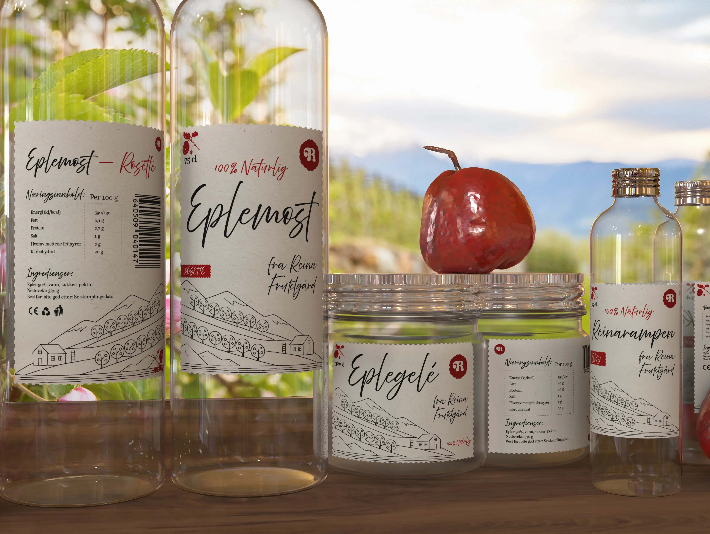
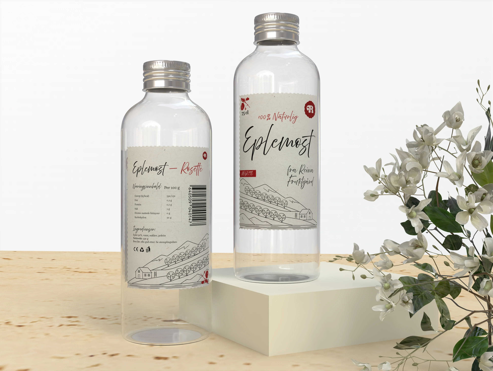
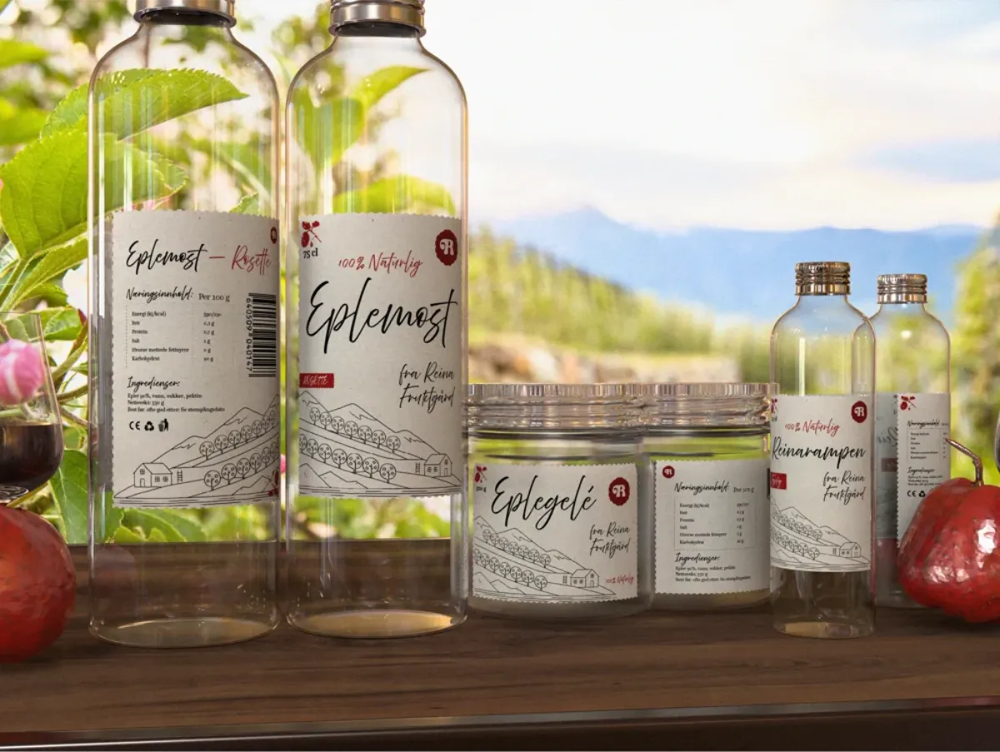
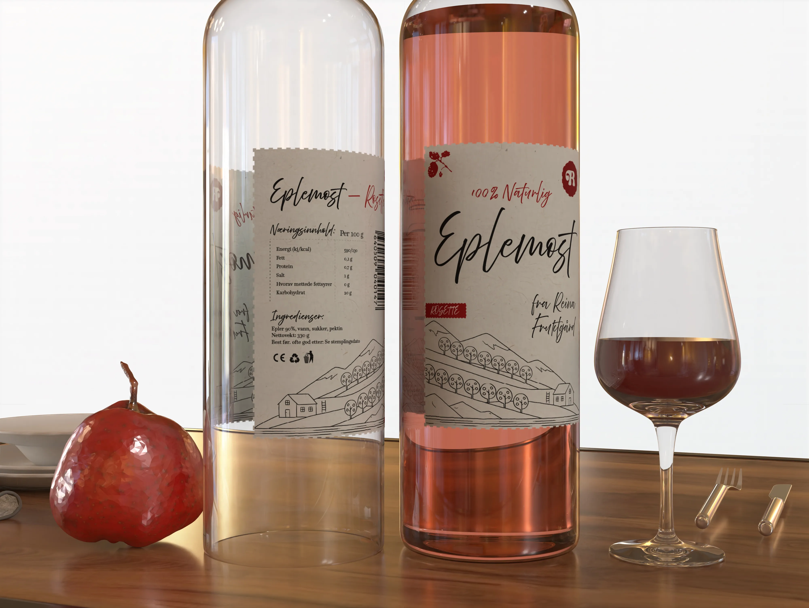
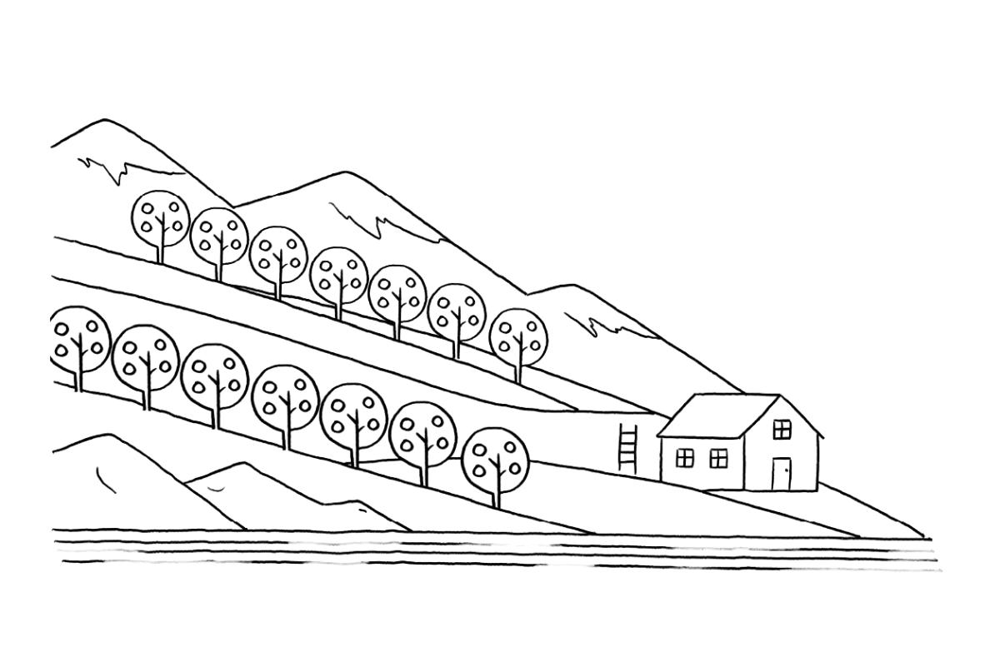

Emballasje
design for
Reina
Fruktgård
Emballasjedesign — Reina Fruktgård

Emballasjen til Reina Fruktgård bygger på et nedtonet og stedbundet uttrykk, der landskapsillustrasjon, håndtegnet typografi og naturpapir formidler gårdens historie, håndverk og lokale forankring.




Verdier og identitet
Siden Reina Fruktgård bygger på økologi, kvalitet og lokal produksjon, ønsket jeg at identiteten skulle oppleves ærlig, jordnær og lite industriell. Derfor ble uttrykket redusert, med få farger, håndtegnet illustrasjon og materialer som gir en mer fysisk og naturlig følelse.
Marked og kontekst
Reina opererer i det norske lokalmatmarkedet. De retter seg mot et nisjemarked med økende etterspørsel etter økologiske og autentiske produkter, i skjæringspunktet mellom landbruk, håndverksdrikke og reiseliv.
Etikett og emballasje
De tilbyr foreløpig ikke eplegelé, men planlegger å utvikle og lansere dette i fremtiden.
Produktnavnene får ulik stemning, men holdes sammen av samme typografiske system, fargebruk og etikettstruktur. Dette gjør at hvert produkt får egen personlighet uten at serien mister helheten.
Above the Beyond Script & Questa
Landskap og sted

Et stilisert landskapsmotiv hentet fra gårdens egne omgivelser. Skråningen i terrenget gir komposisjonen retning — gårdsbygningen forankrer den i stedet. Logoens skrift får stå ren og fleksibel; illustrasjonen bærer historien. Den håndtegnede linjen understreker det ekte: småskala, nært og uten filter.
Reinarød og svart
Reinarød er valgt som en varm og jordnær hovedfarge, med referanser til epler, gårdstradisjon og norsk lokalmat. Sammen med svart gir den identiteten et tydelig og robust uttrykk, uten at emballasjen blir for dekorativ.
Skjerm
Trykk (naturpapir)
Skjerm
Trykk (naturpapir)
Produksjon og overflate
Naturpapir og matt overflate er valgt for å understreke det håndverksbaserte og småskala uttrykket. Den ubestrøkne etiketten gir en mer taktil følelse og passer bedre til lokalmat enn en blank og industriell finish.
| Del | Materiale |
|---|---|
| Flaske | Glass |
| Etikett | Papir (ubestrøket / naturpapir) |
| Finish | Matt (ikke plastfilm) |